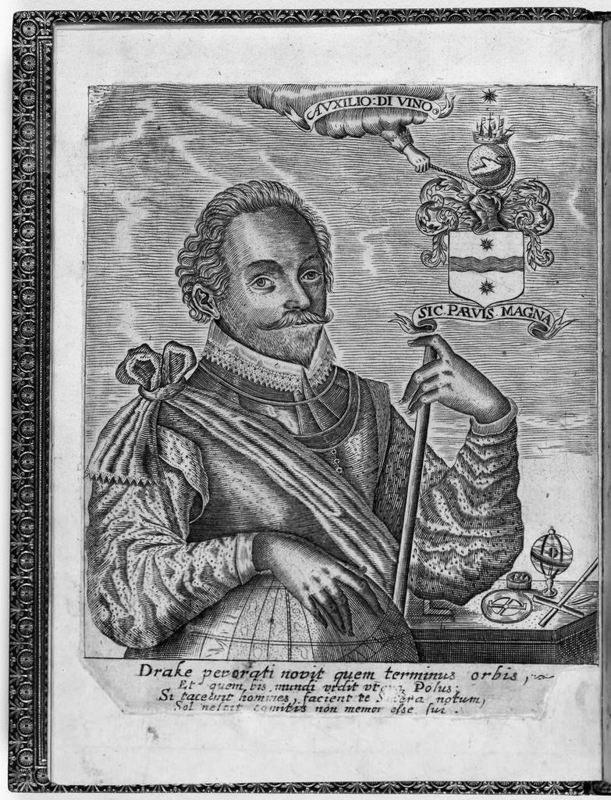
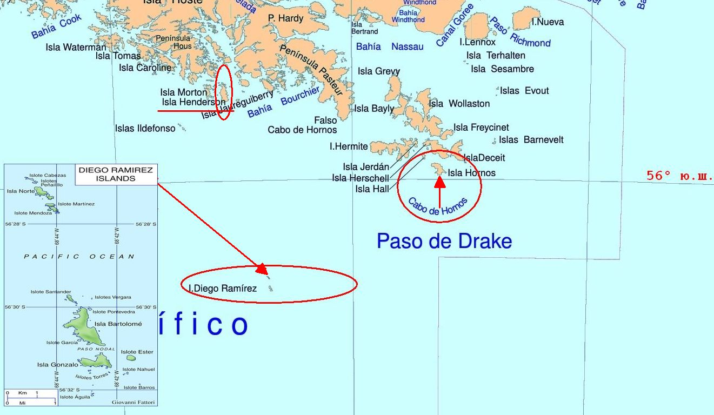
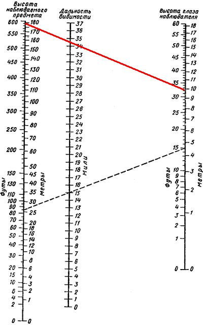

В предыдущем нашем рассказе мы обещали поговорить о той части кругосветного путешествия Фрэнсиса Дрейка, которая касалась его прохода между Атлантическим и Тихим океанами осенью 1578 года.
История эта настолько противоречива, а ее изложение и в мировой, и в отечественной литературе настолько путано, что я не пожалел нескольких недель из отмеренного мне времени, чтобы глубже окунуться в события тех далеких дней.
Основным источником сведений о кругосветном путешествии Фрэнсиса Дрейка (1577-1580) являются заметки капеллана экспедиции Фрэнсиса Флетчера. Однако опубликованы они были лишь почти полвека спустя, в 1628 году, да и то в урезанном виде.

Гравюра с портретом Дрейка из первого издания записок Флетчера The world encompassed by Sir Francis Drake…
Такое вмешательство в содержание первоисточника можно объяснить, если принять во внимание личность публикатора: это был племянник Фрэнсиса Дрейка (и к слову, его полный тезка), который не только сократил, но и отредактировал подлинную рукопись Флетчера.
Отметим, что ко времени публикации произошли знаменательные события в географическом познании нашего мира. Были, в частности, открыты мыс Горн и пролив Дрейка. Поэтому нельзя исключать, что редактирование рукописи Флетчера в той или иной мере коснулось освещения в ней именно этого участка маршрута.
Прежде чем обратиться к анализу документов, почитаем, что писали и пишут об этом походе Дрейка в нашей литературе.
Возьмем том 2 труда Магидовича И. П. и Магидовича В. И. Очерки по истории географических открытий (М., Просвещение, 1983). О том, с чем встретились моряки «Золотой лани», выйдя из Магелланова пролива в Тихий океан и попав в жестокий шторм, читаем:
Буря длилась 52 дня, до конца октября. За все время было только два дня передышки. «И вдруг все точно рукой сняло: горы приняли благосклонный вид, небеса улыбались, море спокойно, но люди были измучены и нуждались в отдыхе». Одинокий корабль «Золотая лань» (100—120 т) за два месяца отнесло бурей на юг почти на пять градусов.
24 октября моряки усмотрели «самый крайний» к югу остров и простояли там до 1 ноября; «за ним в южном направлении не было видно ни материка, ни острова, лишь Атлантический океан и Южное море встречались на... вольном просторе». Но Дрейк ошибся: обнаруженный им маленький о. Хендерсон (55° 36' ю. ш., 69° 05' з. д.) находится в 120 км к северо-западу от мыса Горн.

«Дрейк ошибся». Т.е. он не мог видеть то место, где «Атлантический океан и Южное море встречались на... вольном просторе». Тогда как понимать утверждение, следующее сразу же после сказанных слов уважаемых авторов:
Открытие свободного водного пространства дало Дрейку возможность доказать, что Огненная Земля, или «Неведомая Земля» (Терра Инкогнита), вовсе не выступ Южного материка, а архипелаг, за которым простирается, казалось, беспредельное море.
Странное «доказательство».
Воспользовавшись номограммой выпускника Военно-морского инженерногоу училища (моей, кстати сказать, Альма матер) капитана 2 ранга Николая Николаевича Струйского (1885—1935) , легко можно определить геометрическую дальность видимости в океане, которая уж никак не превысит 100 миль для самых высоких гор в этом районе.

Номограмма Струйского, показывающая максимальное расстояние между двумя точками, позволяющее им оставаться во взаимной видимости, в зависимости от их высот. Наблюдатель на высоте 10 м (правая шкала) увидит утес высотой 180 м (левая шкала) с расстояния примерно 34,5 морской мили (средняя шкала).
А если учесть, в каких погодных условиях проходило плавание, то реальная видимость ограничивалась, дай бог, десятком миль. И о каком открытии пролива могла идти речь, если реально к востоку находились участки земли, которую Дрейк не смог увидеть.
Или вот еще один распространенный миф. Вот что пишет В.В. Шигин в своей книге «Дрейк. Пират и рыцарь»:
А ведь у Дрейка не было никаких карт, и идти приходилось почти на одной интуиции.
Заблуждение.
Вскоре после выхода из Плимута, на островах Зеленого мыса «Пеликан» захватил свой первый приз – португальский корабль, на котором в качестве штурмана находился опытный моряк Нуно да Сильва, хорошо знавший акваторию южной части Атлантического океана. Дрейк взял его на свой корабль вместе со всеми картами и навигационными приборами. Впоследствии журнал, который вел да Сильва во время экспедиции Дрейка, был опубликован и мы к нему еще вернемся.
Практику захвата карт, штурманских приборов и самих штурманов португальских и испанских кораблей Дрейк продолжил и в дальнейшей части своего плавания. Так что нет оснований считать, что Дрейк полагался в своем походе лишь «на интуицию».
Совершенно безосновательными являются утверждения об открытии Дрейком мыса Горн, как это делается в популярной книге Малаховского «Кругосветный бег Золотой лани» (1980):
Дрейк установил, что к югу от Магелланова пролива находится не огромный материк, а группа небольших островов, за которыми опять начинается необозримый водный простор. «Золотая лань» достигла мыса Горн. Там Дрейк и его спутники высадились и провели два дня. Пастор Флетчер отправился к самой южной точке острова. Там, достав из принесенного с собой мешка инструменты, он выбил на большом камне «имя ее величества, название ее королевства, год от рождества Христова и день месяца». «Мы,— пишет Флетчер,— покидали самую южную из известных земель в мире... Мы изменили название этой южной земли с Terra Incognita (так действительно было до нашего прихода сюда) на Terra Hunc Bene Cognita (Земля, теперь хорошо известная)». Дрейк дал всем островам общее название — Елизаветинские.
Трудно также искать логику в многочисленных утверждениях о том, что Дрейк открыл пролив между Южной Америкой и южным материком, вроде этого, например:
Во время кругосветного путешествия Фрэнсис Дрейк открыл пролив между Огненной Землей и Антарктидой, позже названный его именем
Самые знаменитые путешественники (Составитель А.И.Пантилеева)
Или еще:
В 1577 году Огненную Землю обогнул англичанин Френсис Дрейк и доказал, что это не выступ неведомого Южного материка, а архипелаг.
Прим. ред. Соловьева А. И. к переводу книги Р.Рамсея Открытия, которых никогда не было (М., "ПРОГРЕСС", 1982)
Думаю, примеров достаточно. Вывод напрашивается сам собой: в этом деле надо разбираться. Вот и займемся этим в следующий раз.